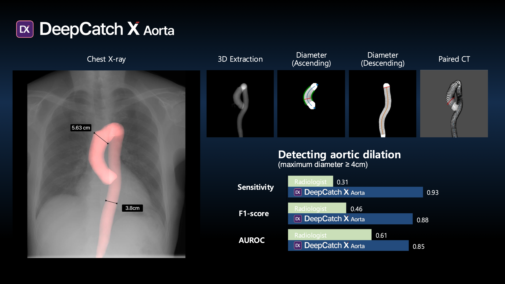
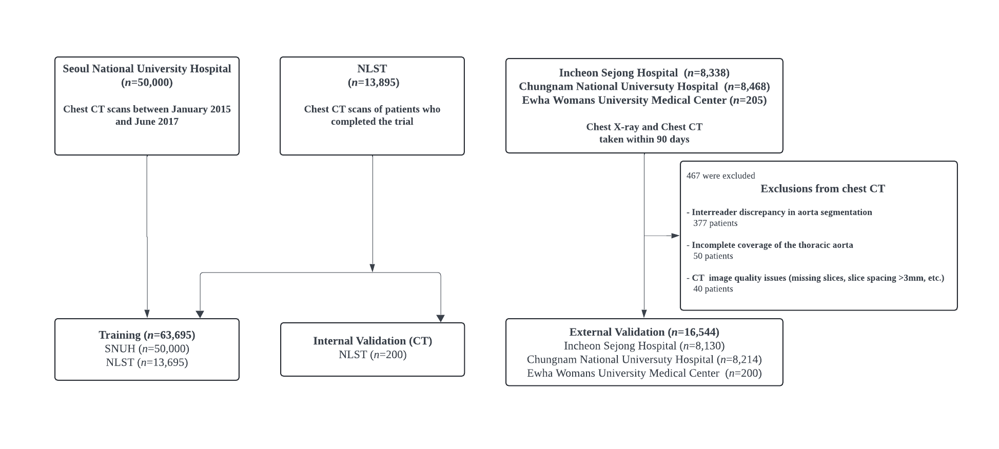

Overview
DeepCatch X is a medical imaging platform that extracts clinical measurements from standard chest X-rays that traditionally require CT scans, using generative AI. A distributed Ray inference pipeline achieves 100x daily throughput improvement.
Data Acquisition & Management

International Data Vendors
Supplementary datasets were sourced from international medical data platforms to meet project requirements: demographic diversity (ethnicity, sex, height/weight), scan conditions (slice thickness, chest coverage), and clinical balance (normal vs. disease). End-to-end acquisition of 100TB+ supported FDA / MFDS regulatory submissions, requiring rigorous documentation of dataset provenance and balance.
Research Innovation
The core research contribution is a conditional diffusion model that extracts 2D aorta projections from X-rays. A 3D volumetric extension via Latent Diffusion with a 3D VAE, Flash Attention, and window attention for local context is proposed.
Training uses a ConcatConditionedUNet with noise prediction objective (MSE loss), conditioned on X-ray input via channel concatenation. 4-GPU DDP training (NCCL) with gradient accumulation (effective batch size 512), mixed precision (FP16 + GradScaler), and cosine LR schedule with warmup.

Inference Optimization
Hospital datasets arrive on physical SSDs — terabytes of DICOM files with no API endpoint. The Ray-based pipeline orchestrates 14 modules as a DAG of independent actors with automatic scheduling and zero-copy data sharing. A VLM-driven pre-filter inspects incoming DICOMs and routes only valid PA-view chest X-rays into the pipeline, eliminating wasted compute on incompatible studies.


Large-Scale Processing
Beyond scheduling, the system includes layers of hardening that enable reliable processing of 2.3M+ files across multi-day runs: adaptive weight management with two loading strategies, memory-bounded workers with automatic respawn, and crash-safe persistence via CSV state logs and atomic writes.

Production Engineering
Shipping deep learning to hospitals means standalone executables, no Python runtime, and IP-protected binaries. A major refactoring effort eliminated dead code and unified the architecture before Nuitka compilation.
Codebase Refactoring
Nuitka Deployment
Compiled to standalone executables with bundled CUDA/PyTorch dependencies via Nuitka. Model inference accelerated with TensorRT compilation, ONNX export, and FP16 precision. Source-code encryption for IP protection in commercial deployments.
BioAge: R to C++
The platform estimates biological age from chest X-ray biomarkers, outputting 52 clinical fields including risk scores and life expectancy. The original R algorithm was ported to production C++ and compiled into a shared binary for integration into the deployment pipeline. Achieves numerical equivalence to the original R implementation. Deployed across check-up centers.